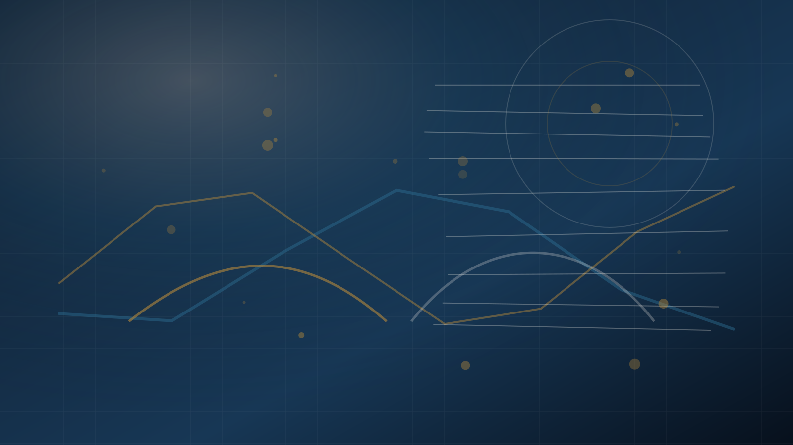

Yönlendirme
Almanya Eğitim Danışmanlığı sayfası güncellendi.
Bu hizmet için güncel sayfa yeni adrestedir. Akademik planlama, Studienkolleg, lisans, yüksek lisans ve hazırlık stratejisi detayları orada açıklanır.

Yönlendirme
Bu hizmet için güncel sayfa yeni adrestedir. Akademik planlama, Studienkolleg, lisans, yüksek lisans ve hazırlık stratejisi detayları orada açıklanır.